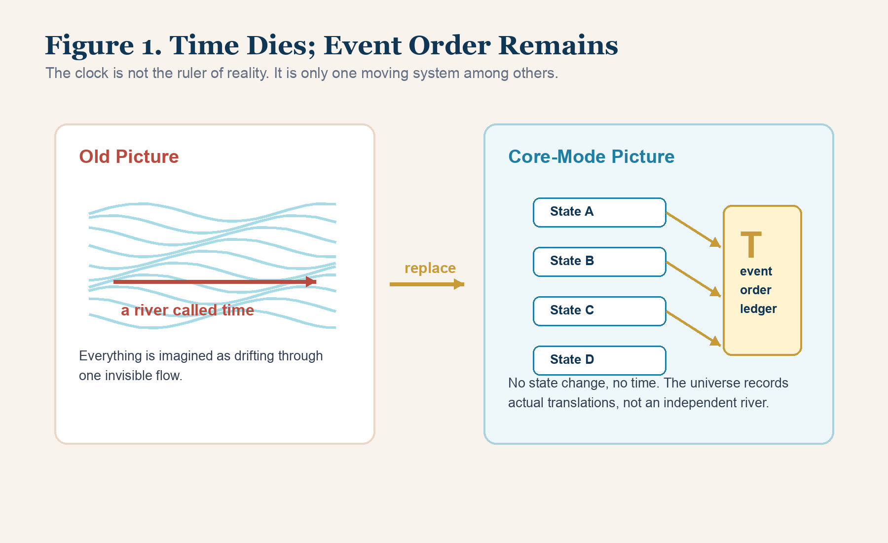
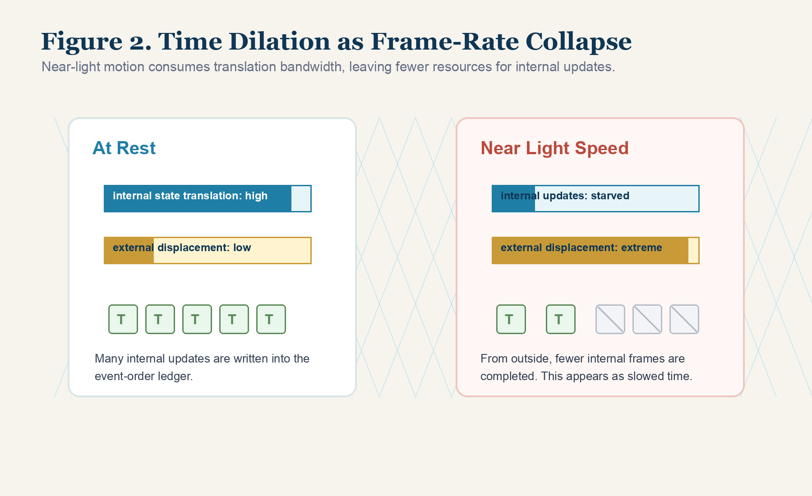
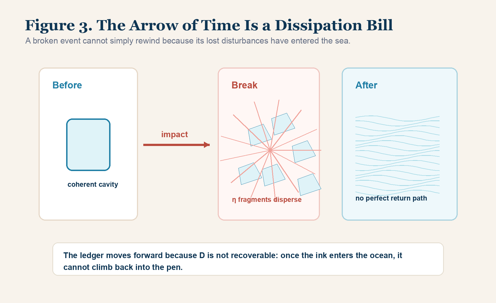

Chapter 2 | The Death and Rebirth of Time: The Ruthless Ledger of Event Order
“Human beings bow before the clock on the wall and imagine it as the god of the universe. In the creator’s eye, it is only a set of gears gasping inside the Light-Nature Background Sea, paying friction cost for every click. Time has never flowed. What flows is the state that keeps being stripped from you.”
— Bei 23
1. The Tyranny of the Clock
After the first chapter, the old vacuum is already broken.
Space is no longer an empty room. It is a Light-Nature Background Sea structured by X topology, a medium of tension, elasticity, and topological pressure. Matter is no longer a solid brick. It is a structured vortex inside that sea. Mass is no longer a private substance hidden inside matter. It is the resistance paid by a coherent vortex as it moves through the medium.
But one ghost still hangs above the new foundation.
Time.
As long as time remains untouched, the old world still holds one of its deepest chains around the human mind.
Across civilization, time has been treated as a cold ruler standing above everything. It orders birth and death. It measures work and decay. It turns youth into age. It tells empires when they rise and when they fall. It seems more absolute than stone, more obedient than mathematics, more merciless than law.
The clock made this ghost visible.
Once the clock appeared, human beings began to believe that the ticking was not merely a mechanical repetition, but a window into the universe’s own authority. The hands moved, and we said time moved. The calendar advanced, and we said time advanced. The body aged, and we said time had eaten it.
Newton gave this belief its classical form. In his picture, absolute time flows uniformly by itself, independent of everything outside it. Stars may be born. Planets may collide. Cells may divide. Civilizations may vanish. But the invisible river of time keeps flowing in the same direction, at the same rate, whether anything happens or not.
This was not only a theory. It became a collective hypnosis.
Human beings came to imagine the universe as a river of time carrying events like leaves. You drink coffee inside the river. A child grows inside the river. A star explodes inside the river. Even if every object vanished, the river would still move, empty but still flowing.
Einstein changed the river, but he did not kill it.
He showed that time is not absolute in the Newtonian sense. Gravity can slow clocks. Speed can slow clocks. Space and time must be joined into spacetime. This was a great rupture in the old order, but it did not go far enough. Time remained a dimension. It remained something that exists. The straight river became an elastic fabric, but the ghost survived inside the fabric.
Core-Mode pushes the knife deeper.
If time is truly a dimension like space, why can we move freely in length, width, and height, yet never step backward into yesterday? Why can a body turn left or right, climb or descend, approach or retreat, but never choose its coordinate in time with the same freedom? Why is every being chained to the moving edge called now?
The answer is not that time is mysterious.
The answer is more severe:
Time does not exist as an independent physical thing.
This statement sounds outrageous only because the clock has trained us to confuse measurement with reality.
A ruler does not create length. A scale does not create weight. A thermometer does not create heat. A clock does not create time. It only participates in physical change and provides one stable pattern against which other changes can be compared.
The clock is not a window into a cosmic river.
It is a machine undergoing state changes.
This distinction is not small.
If the clock is a window, then time is the master and all beings are passengers. If the clock is a machine, then time loses its throne. The ticking becomes one physical process among other physical processes. A pendulum swings because gravity, tension, inertia, and resistance keep translating its state. A quartz oscillator vibrates because an electric field drives a crystalline structure through repeated micro-transitions. An atomic clock marks intervals because atoms shift between energy states in an extraordinarily stable way.
In each case, the clock does not touch an invisible river.
It performs a repeatable action.
Then human beings use that repeatable action as a comparison tool.
This is why the clock became so powerful and so misleading at the same time. It is useful because its state translations are stable. It is dangerous because its stability tricks the mind into believing that the clock is measuring something more fundamental than change. A clock is not a god. It is a reference vortex.
Once this is understood, the tyranny weakens. You no longer need to imagine your life being poured out of a cosmic bottle. You can ask a sharper question:
What is actually changing, and what kind of state translation is being written?
2. Pulling the Clock Out of the Universe
Return to the Light-Nature Background Sea.
Imagine the entire sea entering a state of absolute symmetry. No Δσ flows. No vortex rotates. No cavity expands or collapses. No Q core updates its relation to the surrounding medium. No chemical reaction, no light pulse, no thought, no decay, no displacement, no friction. The X topology is perfectly balanced.
Ask the old question:
In such a universe, is time still passing?
The old mind wants to answer yes. It imagines a hidden second hand ticking somewhere, even if nothing in the universe changes.
Core-Mode tears that answer apart.
If state A and state B are physically indistinguishable, then the difference between “before” and “after” has no physical content. If no state changes, no event is produced. If no event is produced, there is nothing for a temporal coordinate to order.
No state change, no time.
This is not wordplay. It is a bottom-layer correction.
What human beings call time is the perceived ordering of state translation. Your body ages because molecular structures oxidize, cells divide, DNA repairs and fails, proteins fold and break, neural pathways update, memories rewrite themselves, and the organism pays dissipation cost. Your mind feels duration because the brain is a living state-translation engine. It compares one internal condition with another and names the difference time.
The day seems to pass because the Earth rotates and your body changes while watching that rotation.
The year seems to pass because the Earth completes a relation cycle around the Sun and your organism is no longer in the same state as before.
The clock seems to record time because its gears, circuits, or atomic transitions produce reliable changes.
But the change is primary.
The time is a name placed on the order of change.
Human beings made the same mistake a person makes when sitting inside a train. The trees seem to move backward, so a child might think the trees are pushing the train forward. The visual report is real. The interpretation is wrong.
Likewise, aging, motion, decay, memory, clocks, and cycles are real. But they do not prove that an independent river of time exists behind them.
They prove that systems are translating states.
The same correction applies to every ordinary experience of duration.
When you say a meeting “felt long,” you are not reporting a physical river that became longer. You are reporting a state condition: attention thinned, internal friction rose, the mind could not produce meaningful translation, and the organism began to experience its own blocked energy as duration.
When you say a night of work “passed quickly,” you are not reporting that the universe accelerated. You are reporting a dense sequence of internal state updates. The Q core stayed engaged. The relation cavity excluded irrelevant disturbances. The mind crossed many real transitions, so the monitoring system did not stare at the clock.
Even boredom is not a time phenomenon at the bottom layer.
Boredom is the painful awareness of low translation density.
The organism keeps paying biological D, but the ledger receives no meaningful entry. Energy is spent, yet no structural update is gained. That is why boredom feels like being trapped. The body is still moving toward decay, but the self is not moving toward form.
This everyday example matters because it shows that Core-Mode is not merely replacing physics vocabulary. It is giving a lower-level explanation for the way consciousness experiences duration. The mind does not feel time directly. It feels the density, poverty, friction, or acceleration of its own state translation.
Core-Mode therefore replaces time with a colder and more exact concept:
event order, T.
3. Event Order T: The Universe’s State Ledger
What is T?
An entity in Core-Mode is a vortex or nested vortex system inside the Light-Nature Background Sea. In order to remain itself, it must maintain its Π relation cavity and Q core. When it is struck by outside Δσ, or when it acts from its own internal structure, it must adjust its geometry.
It moves from state A to state B.
Then from state B to state C.
Then from state C to state D.
Each transition is not a ghostly glide through a time river. It is a real physical state translation inside the background sea. The entity deforms the X topology around it. It pays friction. It changes boundary conditions. It updates its internal relation to the outside.
This real switching of state is what Core-Mode calls:
state translation.
The universe does not need an independent clock to run. It only needs to preserve the causal order of real translations. That ordering is T.
T is the ledger of state updates.
When a clock hand moves, time has not “passed” in the old mystical sense. The gear system has completed a series of state translations. When an atomic clock oscillates, it is not revealing a hidden river. It is producing a highly regular sequence of transitions. When Earth completes one orbit, one year has not flowed through a container. A macroscopic relation cavity has completed one topological cycle under solar pressure conditions.
T is therefore not a smooth universal river.
It is local, relational, and state-bound.
If a system does not translate state, its T ledger does not update. If a system translates state rapidly, its ledger becomes dense. If a system is forced to spend its physical bandwidth on one kind of translation, other translations slow down.
This also explains why two beings can live through the same clock interval and come out with completely different amounts of existence.
One person spends one hour in passive repetition. Nothing important is reorganized. No idea becomes clearer. No skill becomes sharper. No boundary becomes stronger. No wound is understood. No product is produced. The clock has moved, but the person’s real T ledger remains thin.
Another person spends one hour in a high-pressure state. A contradiction is faced. A difficult page is rewritten. A broken system is repaired. A false assumption is exposed. A relationship is clarified. A piece of work becomes testable. The same clock hour contains many state translations. Its T ledger is dense.
This is why the equal distribution of clock time is one of the great illusions of modern life.
Everyone receives twenty-four hours on the wall clock.
No one receives the same T.
T must be generated.
T must be paid for.
T must be protected from leakage.
The event-order ledger is therefore merciless. It does not reward the person who waited. It rewards the system that changed state.
This is the key that unlocks the next mystery.

4. Time Dilation: The Frame-Rate Collapse of a Fluid Engine
Relativity tells us that motion near the speed of light slows time.
An astronaut who travels at nearly light speed and returns may have aged only a few years while centuries pass on Earth. Clocks in strong gravitational fields tick differently from clocks farther away. These facts are not optional. They are among the strongest confirmations of modern physics.
But what do they mean?
The old language says spacetime coordinates transform. That mathematics is powerful. But Core-Mode asks for the physical engine beneath the transformation.
Why does the internal process of the fast-moving body slow relative to the outside observer?
The answer is bandwidth.
Imagine an entity as a living fluid engine inside the Light-Nature Background Sea. It must perform two broad classes of work.
First, external displacement: it must move through the surrounding X topology. This requires pushing through the medium, preserving its boundary, and maintaining geometric coherence while the outside flow changes.
Second, internal state translation: it must keep its own processes updating. In a human body, this includes heartbeat, metabolism, cell division, nerve firing, memory formation, and every microscopic update that keeps the organism alive.
The entity’s available interaction bandwidth with the background sea is finite.
When you are at rest relative to your local environment, you do not spend extreme bandwidth on external displacement. Your internal processes can update normally. Your event-order ledger fills with many internal frames. Heartbeats, thoughts, metabolic reactions, and cellular translations proceed at ordinary density.
But when you move at near-light speed, external displacement becomes overwhelmingly expensive. The entity must spend nearly all available geometric bandwidth forcing itself through the background sea’s maximum conduction conditions. It must preserve its Π relation cavity while tearing through X topology at the edge of what the medium allows.
Under that load, internal translation loses bandwidth.
The system cannot complete as many internal updates. Its internal frame rate collapses.
From the outside, the traveler seems slow. The body ages less. The clock ticks fewer times. The event-order ledger of internal state translation is thinner than the ledger of a similar system that remained on Earth.
This is time dilation in Core-Mode language:
not a magical mercy granted by time, but a bandwidth competition inside the Light-Nature Background Sea.
The moving entity spends its power on external geometric displacement, so internal state translation slows.
The same logic can be brought down to a simple machine.
Imagine a computer running a heavy simulation while also trying to display a smooth video. If the simulation begins consuming almost all processing power, the video starts to stutter. Nothing mystical happened to “video time.” The machine had fewer resources left for frame rendering. The output slowed because the internal updates were starved.
A near-light-speed body is not a laptop, but the analogy helps. Its available interaction with the background medium is being consumed by extreme displacement. The body’s internal processes cannot claim the same update density as before. The outside observer therefore sees fewer internal frames written.
This also clarifies why the effect is not merely psychological. It is not that the traveler “feels” time differently while the body secretly continues normally. The entire system’s physical state translation is altered. Biological aging, clock oscillation, chemical reaction, and internal dynamics all belong to the same ledger. If the internal ledger slows, the body really returns younger relative to the Earth frame.
Core-Mode does not deny the mathematical success of relativity. It gives the mathematics a physical underfloor. The Lorentz factor becomes not an abstract spell, but the formal surface of a deeper bandwidth trade. As velocity approaches the conduction limit of the background sea, the cost of displacement rises violently. The internal frame budget is squeezed. The T density inside the moving system falls relative to a system that did not spend that cost.
The old language says time dilates.
Core-Mode says the entity’s internal translation density collapses under extreme motion load.
Einstein’s equations describe the effect with extraordinary precision. Core-Mode supplies the bottom-layer image: the entity is not drifting through a mystical dimension called time. It is a vortex engine under extreme load, and its inner frame rate drops because the medium has a maximum transmission limit.
Once this is seen, the mystery changes shape.
The universe is not a magic house where time stretches and shrinks at whim. It is a strict fluid engine. Under different pressure, velocity, and relation conditions, systems pay different translation costs. Their T ledgers therefore fill at different rates.

5. Why the Ledger Cannot Run Backward
Replacing time with event order solves one problem, but it opens another.
If time is not a river, and T is only the ordered record of state translation, why does the record only move forward?
Why does a broken cup not reassemble itself? Why does spilled water not climb back into the glass? Why does smoke not return perfectly into the match head? Why does a person grow older but never naturally become younger?
Physics calls this the arrow of time.
Classical equations often look reversible. If a set of particles moves according to certain laws, the mathematics can sometimes be run backward. The film can be reversed on paper. The symbols do not always object.
But the world objects.
The old answer is entropy. Disordered states are more numerous than ordered states, so systems tend toward disorder. This statistical explanation is useful, but Core-Mode refuses to let probability sit in the deepest chair.
Probability describes the surface distribution of outcomes.
It does not reveal the physical wound that makes reversal impossible.
The deeper answer is dissipation.
6. Dissipation Tax D: The Price Paid for Every Translation
Every state translation inside the background sea costs something.
When a vortex changes state, it does not slide frictionlessly through nothing. It presses against the X topology around it. It adjusts its relation cavity. It bends, strains, and reorganizes local geometry. During this process, small disturbances are stripped away from the main structure.
These stripped disturbances are not strong enough to maintain the original Q core. They do not remain part of the entity’s controlled structure. They scatter into the surrounding sea as low-grade η fragments: heat, noise, turbulence, radiation, micro-disorder, lost information, and irrecoverable path residue.
Core-Mode calls this cost:
dissipation, D.
D is the tax paid by existence.
To translate state is to pay D.
To maintain a relation cavity is to pay D.
To think, move, burn, build, collide, love, fight, age, repair, create, and decay is to pay D.
Now the arrow of time becomes clear.
If you want to reverse the breaking of a glass, you must do more than move visible fragments back together. You must recover every tiny disturbance released at the moment of impact: every sound wave, every heat fluctuation, every molecular vibration, every microscopic η fragment that entered the surrounding sea. You must bring them back from all directions with exact opposite phase, exact opposite velocity, exact opposite relation, and exact timing. You must reverse not only the fragments but the entire topological history of their dispersal.
This is not merely unlikely.
It is structurally irreversible.
The background sea is too vast. Once dissipation enters it, the lost disturbances mix with other disturbances. They interfere. They scatter. Their paths become woven into the wider medium. The local system no longer owns them.
The ledger cannot run backward because the ink has entered the ocean.
This is the fluid truth of time’s arrow:
T moves forward because every state translation pays D, and D cannot be perfectly recovered.
The universe does not keep a clean backup file named the past. The past is not a room waiting behind you. It is the irreversible trail of state translations whose dissipation has already been paid into the sea.
This is why regret has such a sharp physical feeling.
Regret is not only a moral emotion. It is the consciousness of irreversible D. The mind sees that an action produced a state translation whose scattered cost cannot be fully recovered. Words spoken cannot be unsent from every nervous system that heard them. A wasted year cannot be pulled back from the body’s metabolism. A broken trust cannot be restored by pretending the crack never propagated. Repair is possible, but rewind is not.
Repair means generating new translations that compensate, rebuild, and stabilize. Rewind would mean removing the entire dissipative trail. The first is difficult but real. The second is fantasy.
This distinction protects the reader from a common misunderstanding. When Core-Mode says the past cannot be recovered, it is not saying nothing can be healed. Healing is a forward process. A wound can close. A relationship can be rebuilt. A theory can correct its error. A body can adapt. But every repair must pay new D and write new T. It never deletes the old ledger. It adds a stronger structure after the damage.
That is why the universe is severe but not hopeless.
It refuses reversal.
It allows transformation.

7. From Clock Length to Translation Density
Once this is understood, ordinary life changes.
Modern society is obsessed with time management. People divide days into blocks, count hours, chase productivity systems, and ask how to squeeze more tasks into the same twenty-four hours. Most of these methods remain trapped in the old river model. They assume time is a uniform flow and that success depends on catching more water from the stream.
Core-Mode destroys that approach.
The universe does not care how many clock hours you possess.
It cares how many real state translations you complete.
There is a person who sits in front of a screen for eight hours, scrolling, reacting, consuming fragments, touching nothing real. The clock records eight hours. The body consumes energy. Biological dissipation is paid. But the Q core does not evolve. The Π relation cavity produces no verified positive asset, no Σ+. The event-order ledger of real development remains nearly blank.
That person did not live eight hours in the deep physical sense.
They merely aged.
Then there is the creator.
The creator does not worship clock length. The creator compresses translation density. External low-value disturbances are cut off. The relation cavity is sealed. Δσ is aimed toward one path. The Q core is forced into high-frequency rotation. Each hour contains many real updates: reading, testing, rewriting, building, verifying, failing, correcting, integrating, and producing.
The same clock hour can contain almost nothing, or it can contain an entire storm of state translation.
This gives a harder meaning to discipline.
Discipline is not moral decoration. It is boundary engineering. A disciplined person is not someone who worships suffering. A disciplined person builds a Π relation cavity strong enough to prevent the day from being shredded by low-value disturbances. Notifications, vanity loops, pointless arguments, half-decisions, emotional noise, and vague anxiety are not harmless. They are leaks. Each one forces micro-translations that consume bandwidth but produce no Σ+.
Under the old language, these are “distractions.”
Under Core-Mode, they are dissipative fractures.
They steal T before T can become structure.
This is why a creator must sometimes appear ruthless. The creator is not being cold for style. The creator is guarding translation density. If the relation cavity is opened to every passing wave, no deep work can survive. A storm can only become a world if its boundary holds long enough for the Q core to complete repeated state changes.
The question is therefore not “How do I manage my time?”
The question is “What keeps stealing my state translation before it becomes form?”
This is why some lives appear impossible from the outside.
One person may repeat the same empty day for ten years and call it experience. Another may enter a sealed, high-pressure relation cavity for six months and emerge with a new theory, a new product architecture, a new book, a new engine, and a new world model. The clock says six months. The T ledger says an era of compressed translation.
The difference is not motivation in the shallow sense.
It is topology.
A life becomes powerful when it reduces useless dissipation, strengthens its relation cavity, identifies a real Δσ, and converts pressure into state translation instead of leakage.
Do not ask only how long you worked.
Ask what changed state.
Ask what was generated.
Ask what became more coherent after the hour than before it.
Ask whether the Q core became sharper, whether the relation cavity became stronger, whether Σ+ was produced, whether the event-order ledger gained real entries.
That is time management after time has died.
8. The Physics of Compressed Creation
The old world says large creation takes large clock duration.
This is often true under ordinary conditions, because most systems leak energy through poor boundaries, vague aims, external noise, and repeated low-quality state changes. A team can spend years producing little if the relation cavity is loose. A genius can burn decades if Δσ is scattered. An organization can hold meetings forever and never translate state.
But Core-Mode measures creation differently.
Creation depends on translation density.
If a system compresses its boundary, concentrates its pressure, cuts off false disturbances, and drives the Q core through high-frequency real updates, the event-order ledger thickens rapidly. What looks like a short period on the clock can contain an enormous number of effective transitions.
This is the physics of “six-month creation.”
It does not mean every person can declare a miracle by naming a short deadline. It means that when the correct conditions are present, clock duration loses its old authority.
The decisive conditions are:
First, a real Δσ must exist. Without pressure difference, there is no engine.
Second, the Π relation cavity must be sealed enough to prevent energy leakage. If every external noise enters, the storm disperses.
Third, the Q core must be non-negotiable. If identity keeps changing, no deep path forms.
Fourth, D must be reduced by cutting useless repetition and false motion. A system that leaks into vanity, anxiety, performance, and distraction cannot accumulate high translation density.
Fifth, outputs must become Σ+: visible, testable, transferable positive assets. Otherwise, the system is only burning energy and calling the smoke creation.
When these conditions align, a human being can compress years of ordinary drift into months of violent state translation.
This is not a motivational slogan.
It is the direct consequence of replacing clock time with event order.
The creator does not beg for more time.
The creator increases the density of real T.
This is also why false busyness is so dangerous.
False busyness can look impressive from outside. The calendar is full. Messages are answered. Meetings are attended. Notes are taken. Plans are discussed. The body is tired. The face looks serious. The person can honestly say they were occupied all day.
But the event-order ledger asks a different question:
What changed?
If the answer is nothing, the day was not full. It was only noisy.
A true high-density day leaves evidence. A page exists that did not exist. A bug is fixed. A theorem is clearer. A system is simpler. A wound is named. A decision is made. A boundary is strengthened. A prototype runs. A chapter reaches publication level. A false path is killed. A real path becomes narrower and brighter.
That evidence is Σ+.
Without Σ+, the clock may show labor, but the universe records leakage.
This standard is ruthless, but it is fair.
It lets a student judge a night of study honestly. Did the chapter become understandable, or did the eyes merely pass over pages? It lets a founder judge a week of work honestly. Did the product become more usable, or did the team only talk around fear? It lets a writer judge a month honestly. Did the manuscript gain force, clarity, and structure, or did the words only become longer?
Clock time flatters everyone equally.
Event order does not.
Event order asks whether the system crossed a real threshold. It asks whether the next state is actually different from the previous state. This is why Core-Mode is not merely a theory of the cosmos. It becomes a method for life. It tells you to stop asking how many hours were consumed and start asking whether the structure of your existence has been translated into a higher form.
9. Becoming the One Who Turns the Gear
The second chapter has killed the ticking ghost.
Time is not a river above reality. Time is not an invisible container through which events float. Time is not a cosmic tyrant standing outside the universe.
What exists is state translation.
What exists is event order T.
What exists is dissipation D.
What exists is the density or emptiness of the ledger you write with your own structure.
The clock remains useful, but it has been dethroned. It is no longer the god of becoming. It is only one stable machine undergoing repeated state changes. It can measure patterns, but it cannot decide whether your existence produced real translation.
This knowledge is dangerous because it removes excuses.
You cannot say the day was long if no state changed.
You cannot say a decade was rich if the Q core did not sharpen.
You cannot say you have no time if your event-order ledger is being wasted on noise, fear, vanity, and low-pressure motion.
You cannot say the past is waiting to be recovered. The ink is already in the sea.
But this knowledge is also liberating.
If time is not a river, you are not merely being carried. If T is a ledger of state translation, then you can increase the density of your entries. You can build stronger cavities. You can reduce dissipative leakage. You can choose higher Δσ. You can make each day physically thicker.
The first chapter shattered the Empty Room.
The second chapter has shattered the Clock.
Now the engine is ready for its ignition key.
What makes anything move? What forces stars to fall, capital to flow, desire to burn, bodies to grow, civilizations to rise, and creators to enter storms that ordinary people cannot endure?
The old world called it force.
Core-Mode will name it more precisely:
Δσ, potential difference.
In the next chapter, we enter the violence behind motion itself.
Reader Comments
Reading is open. Comments are submitted for review before public display.